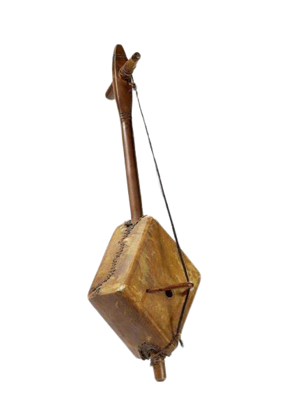
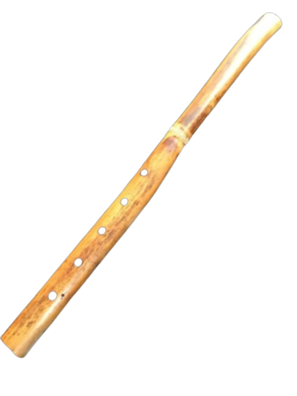
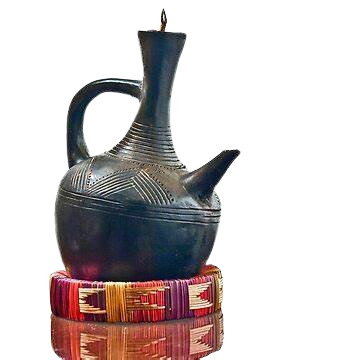
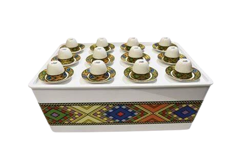
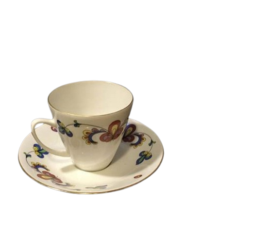

Music Instrument
Kerar
The kerar is a traditional stringed instrument from Ethiopia, also known as the krar.
Kerar
The kerar is a traditional stringed instrument from Ethiopia, also known as the krar. It is a type of lyre, with a bowl-shaped body and five or six strings that are tuned to a pentatonic scale. The kerar is played by plucking, strumming, or bowing the strings, producing different tones and effects. The kerar is often used to accompany songs of love, praise, and celebration, as well as to express emotions and stories. The kerar is one of the most popular and widespread instruments in the northern regions of Ethiopia and Eritrea, and it is also played by the Azmari or Wata, who are poet-musicians that travel from place to place, entertaining people with their witty and humorous lyrics.
Used Time
00:00 hours
Price
12.00$

Music Instrument
Masinqo
The masinqo is another traditional stringed instrument from Ethiopia.
Masinqo
The masinqo is another traditional stringed instrument from Ethiopia. It is a type of spike bowed lute, with a single string made of horse hair. The masinqo is played by bowing the string and lightly touching it with the non-bow hand to produce different pitches. The masinqo is also used by the azmaris, who are poet-musicians that sing songs of love, praise, and satire. The masinqo is tuned to fit the range of the singer’s voice
Used Time
6 month
Price
9.00$

Music Instrument
Washent
The washent is a traditional wind instrument from Ethiopia.
Washent
The washent is a traditional wind instrument from Ethiopia. It is a type of end-blown flute, made of wood, bamboo, or metal. The washent has four finger-holes, which allow the player to create a pentatonic scale. The washent is often used by the azmaris, who are poet-musicians that sing songs of love, praise, and satire. The washent is also popular among the shepherds and cowherders
Used Time
3 month
Price
3.00$

Drinkware
Jebena
The jebena is a traditional Ethiopian coffee pot that is made of pottery and used to brew and serve coffee.
Jebena
The jebena is a traditional Ethiopian coffee pot that is made of pottery and used to brew and serve coffee. The jebena has a distinctive shape, with a round body, a long neck, and a spout. The jebena is usually black, but sometimes decorated with colorful patterns. The jebena is an important part of the Ethiopian coffee ceremony, where coffee is prepared and served in a ritualistic way. The coffee beans are roasted, ground, and boiled in the jebena, then poured into small cups called sini or finjal. The jebena is often accompanied by snacks such as popcorn, peanuts, or bread. The jebena is a symbol of Ethiopian culture and hospitality, and it is usually passed down from generation to generation as a family heirloom.
Used Time
00:00
Price
13.00$

Drinkware
Rekebot
A rekebot is a traditional Ethiopian and coffee table that is used to serve coffee and snacks.
Rekebot
A rekebot is a traditional Ethiopian and coffee table that is used to serve coffee and snacks. It usually has a round or oval shape, with a base and a lid. The rekebot can hold several cups, called sini, and a coffee pot, called jebena. The rekebot is often decorated with colorful patterns or carvings. The rekebot is an essential part of the Ethiopian and Eritrean coffee ceremony, which is a social and cultural ritual that involves roasting, grinding, brewing, and serving coffee.
Used Time
00:00
Price
30.00$

Drinkware
Sini
Sini is a type of small cup that is used to serve coffee in Ethiopia.
Sini
Sini is a type of small cup that is used to serve coffee in Ethiopia. It is usually made of porcelain or metal, and has a handle and a saucer. Sini is part of the traditional coffee ceremony, where coffee is brewed and served in a ritualistic way.
Used Time
00:00
Price
5.00$